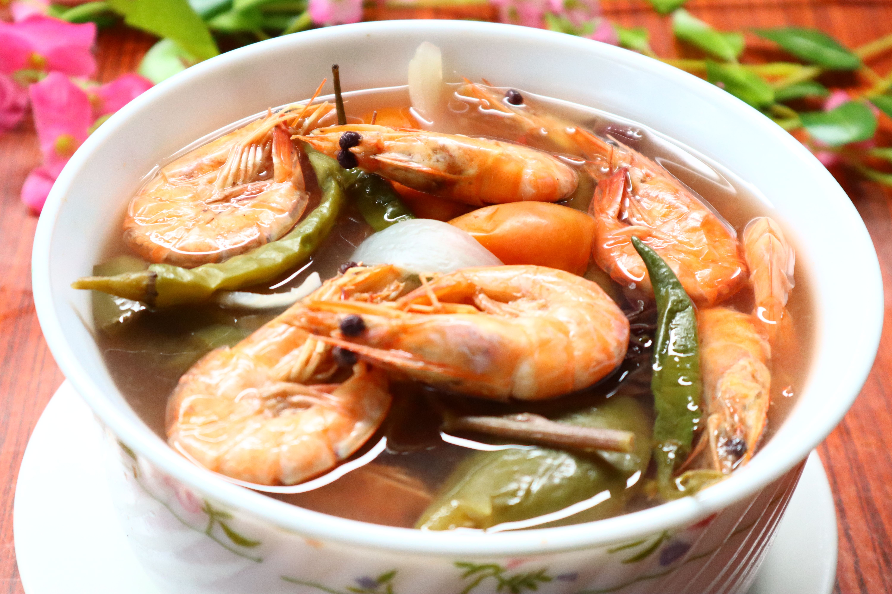
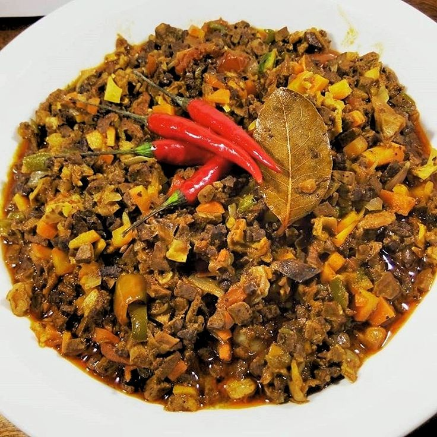
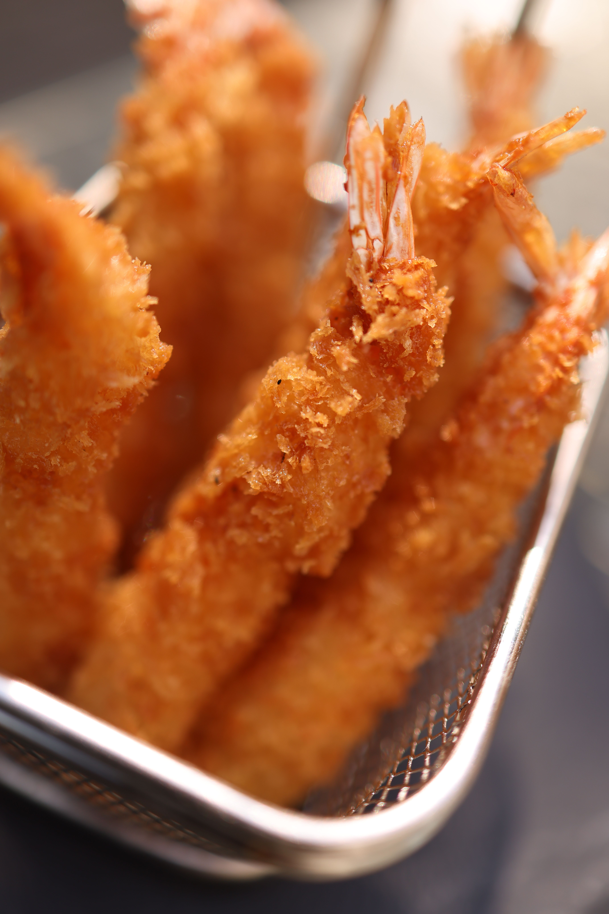

Welcome to my food haven! Here you'll find a mix of comforting Filipino classics and irresistible Japanese bites. From the tangy warmth of sinigang shrimp to the bold, savory kick of bopis, and the crisp perfection of golden tempura, these dishes capture the flavors I love most and want to share with you.



Food tells my story. I grew up savoring the sour tamarind broth of sinigang shrimp, enjoying the hearty spice of bopis, and discovering the delicate crunch of tempura. Each recipe reflects a piece of my journey, blending tradition, adventure, and the joy of eating together.